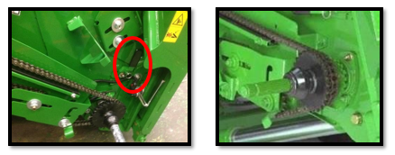
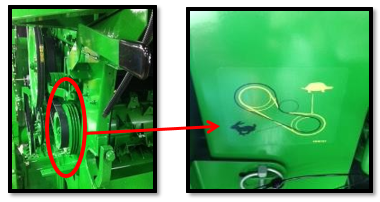
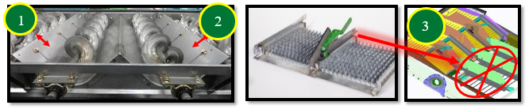
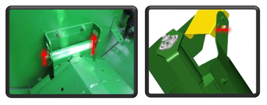
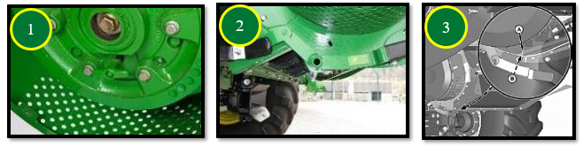

Réglage et inspection de la moissonneuse-batteuse
Hauteur, vitesse et position du tambour d'alimentation
- Position du tambour avant : Poignée vers le bas
- Vitesse de la chaîne du convoyeur : 32 dents pour les conditions de
récolte de blé normales et difficiles, 26 dents dans des conditions sèches.

- Vitesse rapide par défaut. Par temps sec, abaisser la vitesse pour réduire
l’endommagement de la paille et de réduire la charge du caisson.

Contre-batteurs
Il est recommandé d'utiliser les contre-batteurs à petit fil nº 1 et à gros fil nº 2 pour les céréales. Ils offrent les meilleures performances.
Configuration standard de la machine :
- Avant : Contre-batteur à petit fil
- Milieu : Contre-batteur à petit fil
- Arrière : Contre-batteur à grand fil
Conditions de battage difficiles :
- Remplacez le contre-batteur du milieu par un contre-batteur à grand fil.
Cela augmente le battage.
- Remarque : Les contre-batteurs à mini barre ronde nº 3 doivent uniquement être utilisés dans des conditions difficiles lors de bourrages de contre-batteur, et lorsque les réglages machines ne suffisent plus.
Reportez-vous au livret d'entretien pour la procédure de mise à niveau et le
calibrage à zéro des contre-batteurs (de l'avant à l'arrière), ainsi que pour
l'écartement par rapport aux éléments de battage.

Plaques d'obturation du contre-batteur
Généralement pas nécessaire grace aux performances de battage élevées du contre batteur à petit fil et du rotor.
Si le battage est insuffisant, installez les plaques dans l'ordre suivant, pour optimiser le traitement des otons :
| Modèles de machine | Ordre de pose |
|---|---|
| S660 et S670 | 1 → 4 → 5 → 2 → 3 |
| S680 à S690 | 1 → 2 → 3 → 4 → 5 |

Grilles de séparation
Les entretoises de la grille de séparation nº 1 doivent se trouver sur le rail pour l'orge. Cela permet d’avoir les grilles en position haute et d’assurer un flux constant de récolte via les organes de battage.
En cas de mauvaise répartition au caisson de nettoyage
Utilisez les couvercles de grille de séparation nº 2. Ils limitent la sortie de matière par l'extérieur du rotor.
Avant d'installer les couvercles : Tentez d'abord d'équilibrer la répartition en réglant les diviseurs des vis d'alimentation.

Batteur d'otons et déflecteurs supérieurs réglables (suivant équipement)
Le contre-batteur du batteur d'otons doit être en position fermée.

Les déflecteurs supérieurs du rotor doivent être en position standard.
Conditions très sèches :
- Placer les déflecteurs supérieurs en position avancée. Cela améliore la qualité de la paille et réduit la charge du caisson.
Réglages des organes de battage
| Organe | Condition de récolte | Réglage préconisé |
|---|---|---|
| Régime du Rotor | Sèches et cassantes | 850 tr/min |
| Régime du Rotor | Normales et difficiles | 950 tr/min |
| Écartement Contre-batteur | Sèches et faciles | 25 mm |
| Écartement Contre-batteur | Normales et difficiles | 15 mm |
Ces réglages sont des points de départ. Dans des conditions de battage faciles, augmentez l'écartement du contre-batteur jusqu'à 30 mm pour préserver la qualité de paille.

Composants du caisson de nettoyage
Configuration du caisson de nettoyage
Utilisation courante :
- Grille à otons universelle nº 1
- Grille à grain universelle nº 3
Pour plus de performances :
- Grille à otons hautes performances nº 2.
Trémie plus propre, réduction de la charge d'otons.

Réglage des vis d'alimentation
- Diviseurs (n°1) : À ajuster pour une répartition uniforme sur le caisson.
- Tôles de vis : Relevez-les pour limiter la surcharge sur les côtés extérieurs.

Réglages du caisson de nettoyage
Grille à otons
| Élément | Condition | Réglage |
|---|---|---|
| Ouverture Grille | Débit normal (7 t/ha) | 16 mm |
| Ouverture Grille | Débit élevé (10 t/ha) | 19 mm |
| Extension | Terrain plat | 5 mm |
| Extension | À flanc de coteau | 10 mm |
Si vous utilisez une grille à otons hautes performance, ajoutez 2mm à l'ouverture.
Grille à grains
| Élément | Condition | Réglage |
|---|---|---|
| Ouverture Grille | Débit normal (7 t/ha) | 6 mm |
| Ouverture Grille | Débit élevé (10 t/ha) | 8 mm |
| Pré-grille réglable | Toutes conditions | Ouverture MAX |
Ventilateur
| Élément | Condition | Réglage |
|---|---|---|
| Régime Ventilateur | Débit normal (7 t/ha) | 1150 tr/min |
| Régime Ventilateur | Débit élevé (10 t/ha) | 1250 tr/min |
Si vous utilisez une grille à otons hautes performance, augmentez le régime du ventilateur de 100 tr/min.

Transport du grain
Réglages permettant d’optimiser le remplissage de la trémie à grain.
Couvercles de vis transversale : maintenir en position relevée.
Exception : abaisser uniquement si l’humidité de la récolte > 24 %.
Déflecteur (vis de remplissage de la trémie) : réglable pour adapter la répartition du grain.
Position illustrée : chargement de la trémie décalé vers la droite.

Composants du système de résidus
Réglages et configuration des composants du système d’épandage.
Palettes incurvées n°1 : installer sur un segment sur deux de l’épandeur à disques Advanced PowerCast™.
Couvercle sous le tambour d’alimentation n°2 : ne pas installer lors de la récolte de petites céréales (risque d’enroulement).
Ralentisseur de chute n°3 : option configuration Premium ; améliore la forme des andains et le séchage de la paille.

Réglages des résidus
Réglages du broyeur et des déflecteurs pour gérer la répartition et la qualité de broyage.
Régime du broyeur n°1 : régler sur élevé.
Contre-couteaux n°2 : enclencher uniquement si nécessaire pour éviter une consommation d’énergie inutile.
Barre d’ancrage n°3 : installer sur le plancher du broyeur à coupe fine (44 couteaux) pour améliorer la qualité de broyage.

Répartition des résidus
- Déflecteur de rafles n°1 : position relevée / petites céréales.
- Ailettes du déflecteur arrière ou volet de broyage/andainage n°2 : réglables pour améliorer la répartition des résidus.